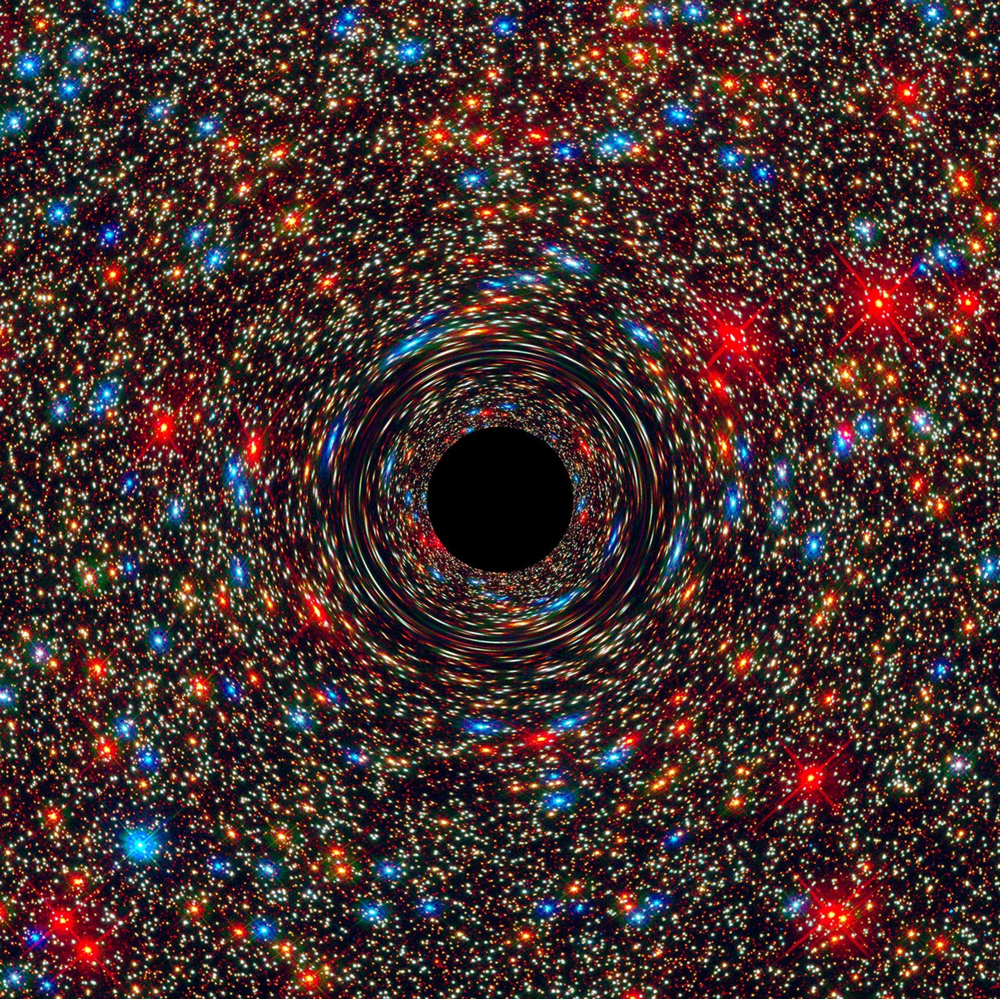
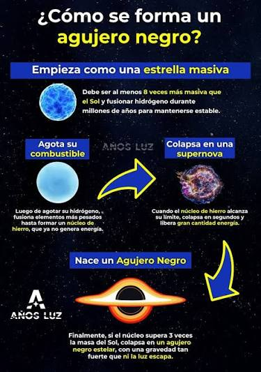

Marco teórico:
1. Características principales de los agujeros negros:
Horizonte de sucesos:
Es la superficie límite del agujero negro. Todo lo que cruza este punto queda atrapado para siempre y no puede regresar.Invisibilidad:
No emiten luz ni radiación propia, por lo que los científicos los detectan al observar cómo afectan el gas, el polvo y las estrellas cercanas
2. ¿Cómo se forman?

Datos esenciales:
La singularidad:
Es el centro del agujero negro, donde la materia está comprimida en un espacio infinitamente pequeño y las leyes de la física convencional dejan de funcionar.
Espaguetización:
Si te acercaras demasiado a un agujero negro estelar, la fuerza de gravedad extrema estiraría tu cuerpo como un espagueti debido a la diferencia de atracción entre los pies y la cabeza
Misma gravedad:
Si sustituimos el Sol por un agujero negro de la misma masa, el sistema solar se enfriaría mucho, pero los planetas permanecerían en sus órbitas.
Aceleración de particulas:
Los agujeros negros supermasivos que están en el centro de las galaxias pueden lanzar partículas casi a la velocidad de la luz.
Exposiciones estelares:
Hay un tipo de agujero negro que nace cuando una estrella masiva se queda sin combustible y explota como una supernova.La mayoría de las galaxias del tamaño de la Vía Láctea tienen un agujero negro supermasivo en su centro. El nuestro se llama Sagitario A* (se pronuncia A estrella), y tiene cuatro millones de veces la masa del Sol.
3. Datos y cifras
El más cercano:
El agujero negro conocido más cercano, llamado Gaia BH1, está a unos 1.500 años luz de distancia.
El más lejano:
El agujero negro más lejano que se haya detectado está en el centro de una galaxia llamada QSO J0313-1806, a unos 13.000 millones de años luz de distancia.
El más grande:
El agujero negro más masivo que se haya observado, TON 618, inclina la balanza a 66.000 millones de veces la masa del Sol.
El más pequeño:
El agujero negro más liviano conocido tiene apenas 3,8 veces la masa del Sol. Está emparejado con una estrella.
Rotación:
Todos los agujeros negros giran sobre sí mismos. El más rápido conocido, llamado GRS 1915 105, registra más de 1.000 rotaciones por segundo.
Instrumento interactivo
Radio: 1
Masa: —
Equivalencia en soles: —
Nuestro stand durante la presentación del proyecto final
Qué encuentra el visitante.
| El experimento físico muestra | El sitio web muestra |
|---|---|
| — | — |
| — | — |